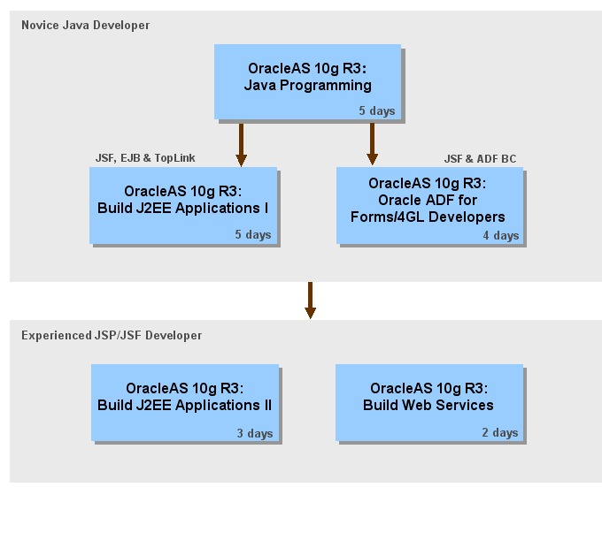

Oracle University offers a path of courses that teach generic Java skills while providing the specific training you need to build J2EE applications with Oracle JDeveloper 10g (10.1.3) and Oracle Application Server 10g (10.1.3). These new courses utilize technologies such as EJB 3.0, JavaServer Faces, and Oracle ADF.

In addition to the above courses, Oracle Technology Network offers a wide range of self-paced training topics in the Oracle By Example format. If you also need self-paced training for comprehensive J2EE applications, then try out the SRDemo tutorials that are provided for JDeveloper and Oracle Application Server.
For detailed information on all Oracle University training, visit www.oracle.com/education.